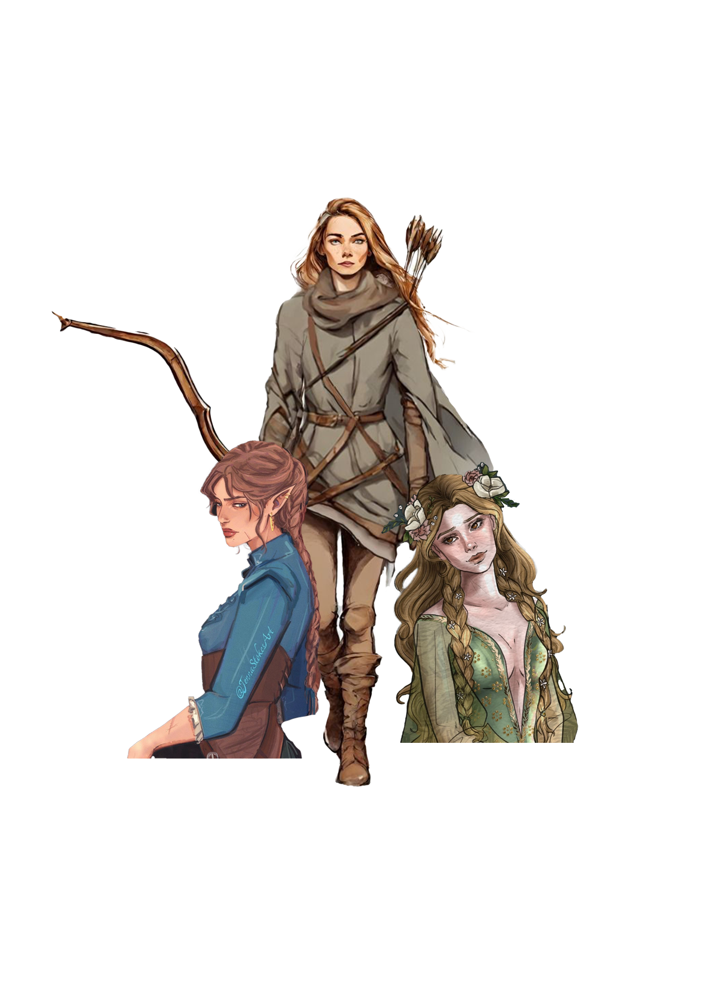
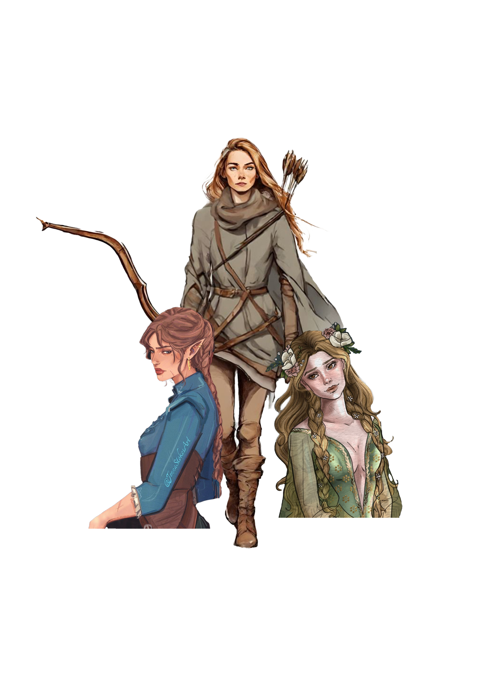
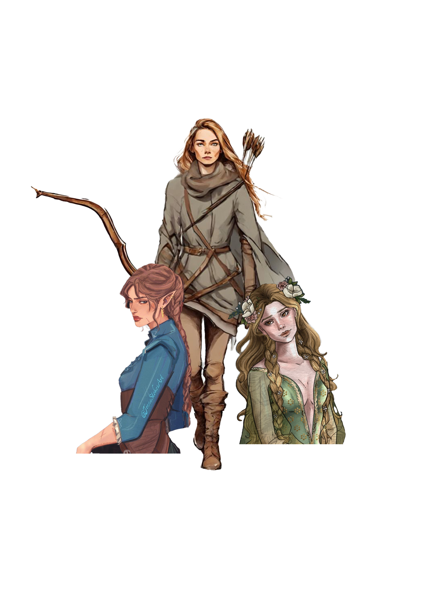
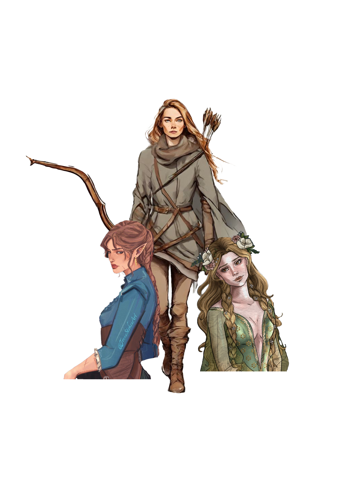

" The stone houses of the village were ordinary and dull, made grimmer by the bleakness of winter. But it was market day, which meant the tiny square in the center of town would be full of whatever vendors had braved the brisk morning. ”
-Feyre, A Court of Thorns and Roses
An unnamed village located south of the Wall that divides the Mortal Lands from the realm of the faeries of Prythian and two days away from it.
After Feyre's father made bad business and the family fell from grace in society, they were forced to move to a small village of poor people. Once there, Feyre had to go into the woods every day to get food for her family as she had made a promise to her mother on her deathbed and her father, having an injured leg, did not work.
The village had dingy stone houses and the streets were made of earth, so during the winter people had to walk in the mud. There was also a small square where merchants met on market day and it was there that Feyre sold the skins of a wolf and a doe to a mercenary.